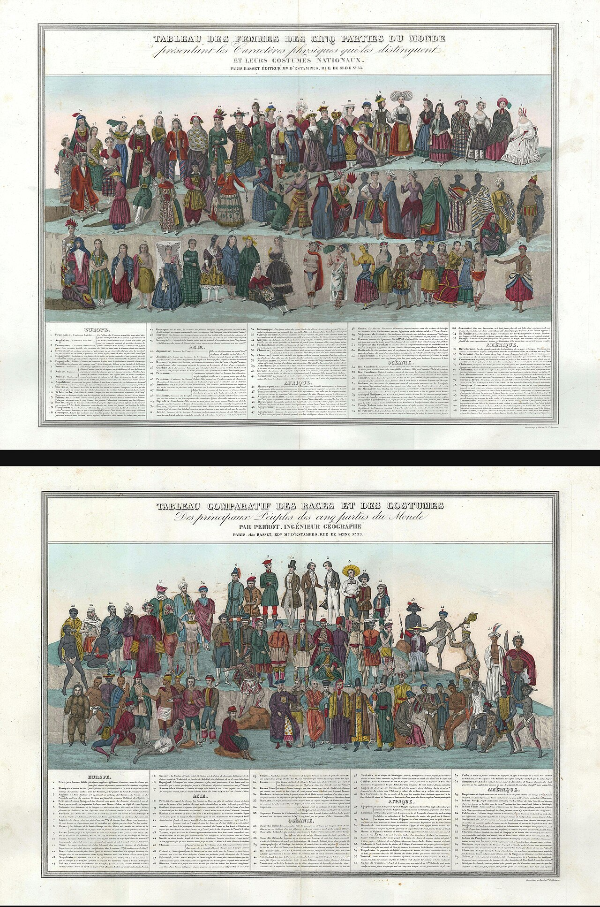
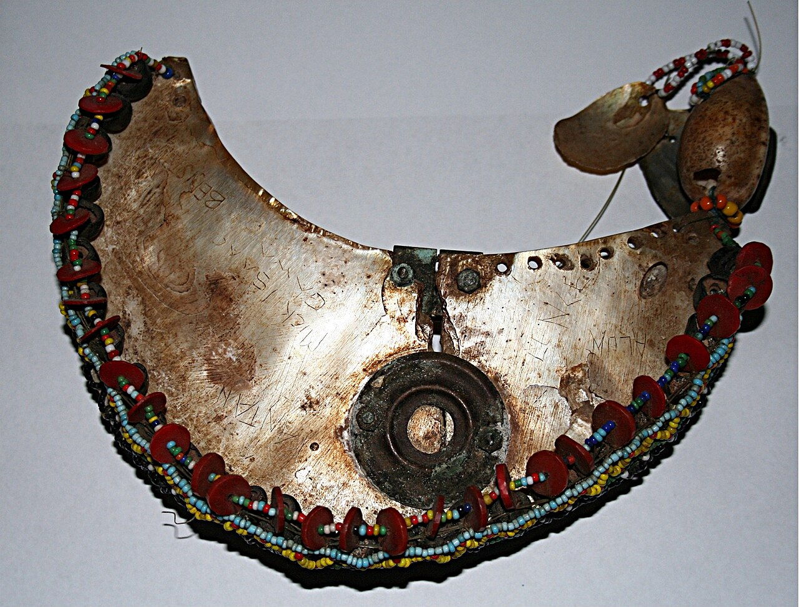
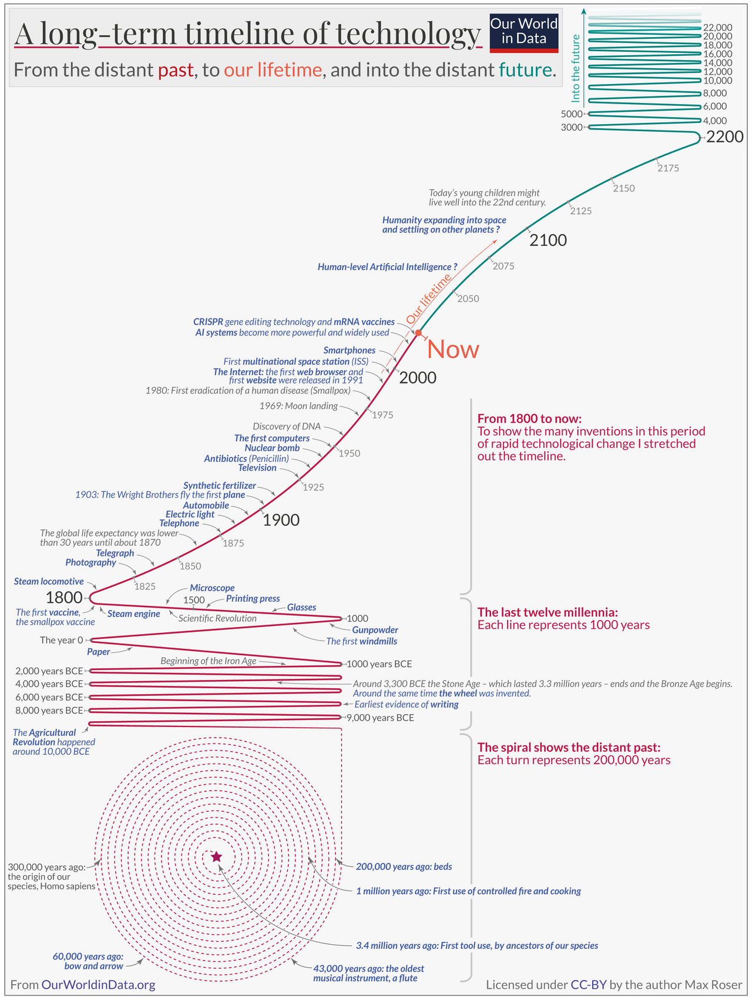

Culture
Ask a hundred anthropologists what they study and the answers scatter across the globe — markets in Marrakech, gift exchange in the Trobriand Islands, teenagers in a Samoan village. Ask what they study in one word, and the answers converge: culture. Culture is the learned, shared, symbolic way of life that every human society builds and passes on, and it is the single idea that turns a pile of curious customs into a science. This chapter takes that idea apart — what culture is, how we acquire it, how we can study cultures other than our own without either sneering at them or losing our footing, how symbols carry meaning, and why no culture ever holds still.
By the end of this chapter you can
- Define culture in the anthropological sense and distinguish it from everyday uses of the word.
- Explain the four defining features of culture — that it is learned, shared, symbolic, and integrated.
- Describe enculturation and identify the agents and mechanisms through which a person learns a culture.
- Analyze a rite of passage using van Gennep's three phases and Turner's idea of liminality.
- Contrast ethnocentrism with cultural relativism, and distinguish the emic from the etic perspective.
- Explain why culture rests on symbols, and relate symbols, values, norms, and worldview.
- Distinguish the mechanisms of cultural change: innovation, diffusion, and acculturation.
- Name key thinkers — Tylor, Boas, Malinowski, Mead, van Gennep, Turner, Geertz — and what each contributed.
Section 1Defining culture

The most important word in anthropology
In ordinary speech, "culture" often means the refined things — opera, museums, a taste for good wine. Anthropologists mean something far larger and far more democratic. The classic definition comes from Edward B. Tylor, who opened his 1871 book Primitive Culture by calling culture "that complex whole which includes knowledge, belief, art, morals, law, custom, and any other capabilities and habits acquired by man as a member of society." Notice the reach of that sentence: culture is not just the fine arts but knowledge, morals, law, and habit — the entire learned way of life of a group. Everyone has culture; there is no such thing as a person, or a society, without it.
This is why anthropologists sometimes distinguish "big-C Culture" (the arts, high achievement) from "small-c culture" (the whole learned pattern of living). It is the second that this book means every time the word appears. A commuter's habit of facing forward and avoiding eye contact in an elevator is culture. So is the way you hold a fork, the distance you stand from a stranger, and your conviction about what counts as a decent meal. Culture is the water we swim in — so ordinary that we rarely notice it until we meet someone who does it differently.
Four things culture always is
Across the discipline, four features turn up in nearly every definition. Culture is learned: it is acquired, never inherited in the genes. An infant carries no culture at birth; a baby of any ancestry, raised in any society, grows up fluent in that society's way of life. This is the crucial break from instinct — a spider spins its web without a lesson, but no human is born knowing how to greet an elder, cook a stew, or pray. Culture is also shared: it consists of patterns held in common, which is exactly what makes social life predictable. You can walk into a shop you have never entered and know, roughly, how the exchange will go. Yet "shared" never means uniform — every society contains subcultures and individual variation, and no two members carry identical versions.
Culture is symbolic: it works through symbols, things whose meaning is assigned by agreement rather than given by nature (the next-to-last section returns to this). A wedding ring, a national flag, a five-dollar bill, and the word "dog" all mean what they mean only because a community agrees they do. And culture is integrated: its parts hang together as a system, so that a change in one area ripples into others. Anthropologists call this holism. When the Skolt Sámi of northern Finland adopted the snowmobile in the 1960s — a change the anthropologist Pertti Pelto tracked closely — it did not stay a mere transport upgrade: it reorganized reindeer herding, split the community into the machine-rich and the machine-poor, drew families into a cash economy, and reshaped status itself. One imported machine bent the whole cultural web.
| Feature | What it means | Everyday example |
|---|---|---|
| Learned | Acquired through experience, not carried in the genes | A child speaks whatever language surrounds it, not its parents' native one |
| Shared | Patterns held in common that make social life predictable | Strangers cooperate smoothly at a checkout line |
| Symbolic | Rests on meanings assigned by agreement, not by nature | A red light means "stop"; a ring means "married" |
| Integrated | Parts interconnect, so change in one area ripples into others | A new technology reshapes work, status, and family at once |
Because cultures are integrated wholes, anthropologists can compare their overall shapes. One long-standing scheme, set out by Elman Service in Primitive Social Organization (1962), sorts societies by scale and political integration into bands, tribes, chiefdoms, and states — from small mobile foraging groups to large centralized polities. A parallel scheme sorts them by subsistence, by how they get their food: foraging (hunting and gathering), horticulture (small-scale gardening), pastoralism (herding animals), agriculture (intensive farming with plows or irrigation), and industrialism. The two schemes track each other loosely — foragers tend to live in bands, states rest on intensive agriculture — and later chapters take each up in detail. The labels are rough and much debated, and no society is ever a pure type, but they capture a real point: the size and organization of a society shape almost everything else about how its culture works.
- Tylor's 1871 definition frames culture as the whole learned way of life — "small-c culture," not just the fine arts.
- Culture is learned, shared, symbolic, and integrated.
- Integration (holism) means a change in one part ripples through the whole, as with the Sámi snowmobile.
- Culture is acquired, not inherited — it is never the same thing as race or biology.
Section 2Enculturation

Becoming a member
If culture is learned, then the process of learning it deserves a name: enculturation, the lifelong process by which a person absorbs the knowledge, values, and behavior of their culture. It begins in infancy and never fully stops — you were enculturated into how to be a child, and later into how to be a coworker, a parent, a citizen. Much of it is invisible, soaked up by watching and imitating rather than by formal instruction. A toddler learns a language without a single grammar lesson, and learns the far subtler grammar of gesture, timing, and personal space the same way.
How thoroughly enculturation shapes us is easiest to see where it fails or where it differs. The rare, tragic cases of severely isolated children show that without early human contact, even language may never fully develop — culture is not automatic, it must be transmitted. And Margaret Mead's famous fieldwork in Samoa (Coming of Age in Samoa, 1928) argued that even something as seemingly biological as the turbulence of adolescence takes its shape from culture: what looks like "just growing up" is in large part a local script. Mead's specific conclusions were later contested, but her central claim — that human development is powerfully molded by culture, not fixed by nature alone — reshaped how the world thinks about childhood.
Who does the teaching
Enculturation runs through many channels at once. The family is the first and deepest agent, the source of your earliest language, manners, and sense of right and wrong. As you grow, peers, schooling, religious institutions, and media each add their layers — sometimes reinforcing the family's lessons, sometimes contradicting them. Anthropologists distinguish explicit teaching ("say thank you") from the far larger body of implicit or tacit learning that no one states out loud but everyone absorbs: how close to stand, when to look away, whose turn it is to speak. Which relatives do the teaching is itself cultural. In societies organized by descent — tracing kinship and belonging through the father's line (patrilineal) or the mother's (matrilineal) — a child may be raised and instructed above all by a particular set of kin.
Rites of passage
Some of enculturation's most concentrated moments come at life's great transitions — birth, adulthood, marriage, death. The ethnographer Arnold van Gennep, in Les rites de passage (1909), showed that ceremonies marking these transitions share a common three-part structure the world over. First comes separation, in which the person is detached from their old status. Then a liminal phase (from the Latin limen, "threshold"), a betwixt-and-between period in which they are neither what they were nor what they will become. Finally incorporation, in which they re-enter society bearing a new, publicly recognized status.
The anthropologist Victor Turner deepened the middle phase. In the liminal state, he argued, ordinary rules and hierarchies are suspended, and initiates often experience communitas — an intense, leveling bond of equality among people going through the passage together. You can see the template everywhere once you know it: a Maasai boy separated from the village for circumcision and seclusion, then returned as a junior warrior; a soldier at basic training; a student stripped of ordinary life for the strange middle-world of a graduation ceremony, emerging a "graduate." The costumes differ; the deep structure is van Gennep's.
| Phase | What happens | Example (graduation) |
|---|---|---|
| Separation | The person is detached from their former status and role | Students gather apart, robed, removed from ordinary dress and routine |
| Liminality (transition) | A betwixt-and-between state; old rules suspended; communitas among initiates | No longer a student, not yet a graduate; the whole cohort waits together as equals |
| Incorporation | Re-entry into society with a new, recognized status | The diploma is conferred; the person is now publicly a graduate |
- Enculturation is the lifelong process of learning one's own culture, mostly through implicit, everyday learning.
- Agents include family (first and deepest), peers, schooling, religion, and media.
- Van Gennep's rites of passage move through separation → liminality → incorporation.
- Turner emphasized liminality and the leveling bond of communitas among those in transition.
Section 3Ethnocentrism vs relativism

Ethnocentrism: my way is the way
The sociologist William Graham Sumner coined the term ethnocentrism in his 1906 book Folkways: the tendency to judge other cultures by the standards of one's own, taking one's own group as the natural center of the world. Ethnocentrism is nearly universal, because enculturation makes our own customs feel obviously correct. It runs from the trivial to the momentous. To one person, eating insects is disgusting; to another, drinking the milk of another species is the strange act. Some see a dog as family and a cow as dinner; others reverse it exactly. Each side, unreflectively, treats its own practice as normal and the other's as deviant.
Ethnocentrism did real damage inside early anthropology itself. The "armchair" scholars of the nineteenth century arranged the world's societies on a single ladder with their own European society, of course, at the top. The best-known version is Lewis Henry Morgan's: in Ancient Society (1877) he ranked every people on earth along one track climbing from "savagery" through "barbarism" to "civilization." Sir James Frazer, in the vast comparative study The Golden Bough, built a similar staircase for thought itself, from magic to religion to science. Even Tylor, whose definition of culture still serves us, shared this evolutionary frame. This unilineal evolutionism was ethnocentrism dressed as science — it read cultural difference as backwardness — and dismantling it was the founding achievement of modern anthropology.
Cultural relativism: understanding in context
The dismantler was Franz Boas, often called the father of American anthropology. Against the evolutionary ladder, Boas insisted that each culture be understood on its own terms, as the product of its own particular history rather than a rung on a universal staircase — a stance sometimes called historical particularism. From it grew cultural relativism: the principle that a belief or practice should first be understood within its own cultural context, by its own logic, before it is judged. Relativism asks a hard question of the observer — not "how odd" but "what does this do, and what does it mean, for the people who live it?"
An essential caution: cultural relativism as anthropologists use it is a method for understanding, not a blanket moral endorsement. Understanding why a practice makes sense inside a culture is not the same as declaring every practice beyond criticism. This is the difference between methodological relativism — suspend judgment long enough to genuinely understand — and a naive moral relativism that would forbid any evaluation at all. Anthropologists work with the first while taking human dignity seriously; the tension between relativism and universal human rights is real, and honest scholars sit with it rather than pretending it away.
Emic and etic
Cultural relativism has a practical toolkit: the paired perspectives emic and etic. The linguist Kenneth Pike coined the terms (from phonemic and phonetic), and the anthropologist Marvin Harris put them to wide use. The emic perspective describes a culture in terms of its own members' categories and meanings — the insider's account of what they are doing and why. The etic perspective describes it in the outside analyst's terms, using concepts that can be compared across cultures. A good ethnographer needs both: emic understanding to grasp what a rain dance means to those who dance it, etic analysis to compare that ritual with others around the world.
| Concept | Stance | Guiding question |
|---|---|---|
| Ethnocentrism | Judge others by my culture's standards | "Why don't they do it the right (my) way?" |
| Cultural relativism | Understand a practice within its own context first | "What does this mean, and do, for the people who live it?" |
| Emic | The insider's own categories and meanings | "What do they say they are doing?" |
| Etic | The outside analyst's comparative concepts | "How does this compare across cultures?" |
- Ethnocentrism (Sumner, 1906) judges other cultures by one's own standards; Morgan's savagery-barbarism-civilization ladder was ethnocentrism as science.
- Cultural relativism (Boas) understands a practice in its own context before judging it.
- Anthropological relativism is methodological — a tool for understanding, not automatic moral approval.
- Emic = the insider's categories; etic = the outside analyst's comparative terms; fieldwork needs both.
Section 4Symbols and worldview

Symbols: the stuff culture is made of
The anthropologist Leslie White argued that the symbol is the basic unit of all human culture — that culture became possible the moment our ancestors could assign meanings freely. A symbol is anything that stands for something else by agreement rather than by nature. The link is arbitrary (there is nothing dog-like about the sounds in the word "dog") and conventional (it works only because a community shares it). The master symbol system, of course, is language, which lets humans store knowledge, coordinate action, and imagine things that do not exist. The Sapir–Whorf hypothesis of linguistic relativity even proposes that the language we speak shapes how we perceive and think — a strong version is doubted, but the core insight, that symbolic categories organize experience, is widely accepted.
Because symbols are arbitrary, the same thing can mean opposite things in different cultures. White, worn to a Western wedding as a sign of purity and celebration, is in much of East and South Asia the color of mourning and death. The classic anthropological illustration of pure symbolism is the Kula ring, the ceremonial exchange that Bronisław Malinowski described in Argonauts of the Western Pacific (1922). It links a wide circle of islands in the Massim region off eastern Papua New Guinea — the Trobriands among them — and two kinds of valuable travel it in opposite directions: shell armbands (mwali) one way around the ring, shell necklaces (soulava) the other. The valuables are useless as tools and are never kept for good — a man holds one for a time, then passes it on. Their worth is entirely symbolic: to hold a famous armshell, however briefly, is to hold prestige, history, and social ties. The Kula is also a textbook case of reciprocity, the balanced give-and-take that anthropologists contrast with redistribution (goods funneled to a center and shared out) and market exchange (buying and selling for price).
Values, norms, and worldview
Symbols cluster into larger structures of meaning. Values are a culture's shared ideas about what is good, right, and desirable — individual achievement, family honor, harmony with nature. Norms are the rules for behavior that flow from those values, and Sumner gave us a useful split between them. Folkways are everyday conventions of etiquette whose violation brings mild disapproval (chewing with your mouth open); mores are norms charged with moral weight whose violation brings serious sanction (the incest taboo, prohibitions on murder). Above and around all of these sits a culture's worldview — its overarching picture of how reality is put together, where humans fit, and what life is for.
Reading culture as a text
How should we study webs of meaning like these? Clifford Geertz, the leading voice of interpretive anthropology, answered with a memorable image: "man is an animal suspended in webs of significance he himself has spun," and culture is those webs. The anthropologist's job, he argued, is thick description — not just recording that an eyelid contracted, but interpreting whether it was a twitch, a wink, or a parody of a wink, which requires knowing the local code. In his celebrated essay on the Balinese cockfight, Geertz read the fight as a "story the Balinese tell themselves about themselves," a dramatization of status and rivalry. Not everyone agrees this is enough: Marvin Harris and the school of cultural materialism insisted that we also explain culture by hard etic factors — ecology, technology, the material costs of getting a living. Interpretation and material explanation remain anthropology's two great, productive rivals.
| Level | What it is | Example |
|---|---|---|
| Symbol | A thing that stands for something else by agreement | A wedding ring; a national flag; the word "home" |
| Value | A shared idea of what is good and desirable | "Independence is admirable"; "elders deserve deference" |
| Folkway | An everyday norm of etiquette; mild sanction | Facing forward and staying quiet in an elevator |
| More | A morally weighted norm; strong sanction | The incest taboo; prohibitions on theft and murder |
| Worldview | The overarching picture of how reality is ordered | Whether nature is a resource to master or a web to live within |
- Leslie White: the symbol — arbitrary and conventional — is the basic unit of culture; language is the master system.
- The Kula ring (Malinowski) shows pure symbolic value and illustrates reciprocity vs redistribution and market exchange.
- Values underlie norms; Sumner split norms into everyday folkways and moral mores; a worldview frames them all.
- Geertz reads culture as webs of meaning through thick description; Harris's cultural materialism answers with etic, material explanation.
Section 5Cultural change

Innovation: culture's raw material
No culture stands still, and every change begins as an innovation — something new introduced into a culture from within. Innovation comes in two forms. A discovery is the recognition of something that already existed (a new plant's medicinal use); an invention is the combination of existing knowledge into something genuinely new (the wheel, the alphabet). Anthropologists also distinguish primary innovations, brand-new ideas or devices, from secondary innovations, which apply or recombine an existing one for a fresh purpose. The great truth here is that most "new" things are recombinations of old ones — culture builds mostly by rearranging what it already has.
Diffusion: borrowing across borders
Far more of any culture's content arrives by diffusion — the spread of cultural traits from one society to another — than is ever invented locally. Anthropologists name three routes. Direct diffusion passes traits between neighbors through trade, intermarriage, and daily contact. Forced diffusion imposes them through conquest or colonization. Stimulus diffusion borrows an idea while inventing the local details: exposed to the idea that marks on paper could carry speech — though he could not read English himself — the Cherokee silversmith Sequoyah spent years devising an entirely original syllabary for his own language, completing it around 1821. Just how much we borrow was skewered by Ralph Linton in his witty 1937 essay "One Hundred Per-Cent American," which traces a patriotic American's morning — pajamas from India, soap invented by the ancient Gauls, coffee from Ethiopia, a newspaper printed in characters invented by the Semites — and concludes that almost nothing about him is homegrown. The lesson: cultural purity is a myth; borrowing is the human norm.
Acculturation, assimilation, and revitalization
When two cultures come into sustained, first-hand contact, both may change — a process called acculturation. Sometimes the change is mutual and creative, producing syncretism, a blend of elements from both traditions: Mexico's Day of the Dead fuses Indigenous and Catholic practice; Haitian Vodou weaves West African religion with Catholicism. Sometimes it runs one way, as assimilation, in which a smaller or dominated group takes on the culture of a dominant one and its distinctiveness fades — often under real pressure rather than free choice.
When contact is overwhelming and a way of life seems to be collapsing, people may launch a revitalization movement — a conscious, organized effort to build a more satisfying culture, a concept the anthropologist Anthony F. C. Wallace defined in 1956. The Ghost Dance of 1890 was one such movement: taught by the Northern Paiute prophet Wovoka and taken up by many Native nations across the West amid catastrophic land loss and the destruction of the bison herds, it promised the renewal of the earth and reunion with the ancestors. Its suppression ended in the massacre of Lakota people at Wounded Knee. The Melanesian movements long labeled cargo cults are another example — organized responses to colonial rule and to the sudden wealth of goods that arrived with wartime occupation. Many scholars now avoid that old label, which made a reasoned political response look merely irrational, and speak instead of cargo movements. In our own moment, globalization accelerates all of this at once. Some fear it drives cultural homogenization — the whole world converging on the same brands and screens. But ethnographers keep finding the opposite as well: hybridization, or "glocalization," in which communities take global forms and remake them into something distinctly their own. Culture, as ever, absorbs and transforms rather than simply surrendering.
| Mechanism | Source of change | Example |
|---|---|---|
| Innovation | New idea or object arising within a culture | Invention of the printing press; discovery of a new crop's use |
| Diffusion | A trait spreads from another society (direct, forced, or stimulus) | Coffee, paper, and pasta traveling along trade routes |
| Acculturation | Sustained contact changes one or both cultures | Day of the Dead blending Indigenous and Catholic elements (syncretism) |
| Revitalization | Deliberate movement to rebuild a threatened way of life | The Ghost Dance; Melanesian cargo cults |
- All change starts with innovation — discovery (recognizing what exists) or invention (combining the old into the new).
- Diffusion (direct, forced, stimulus) supplies most of any culture's traits; Linton's "100% American" makes the point.
- Acculturation from sustained contact can yield syncretism or one-way assimilation.
- Revitalization movements (Wallace) — the Ghost Dance, the Melanesian cargo movements — answer overwhelming change; globalization drives both homogenization and hybridization.
The chapter in one breath
- Culture is the whole learned way of life of a group (Tylor's "complex whole"), not just the fine arts.
- Culture is always learned, shared, symbolic, and integrated — and is never the same as race or biology.
- Enculturation is how we absorb our culture, mostly implicitly; rites of passage move through van Gennep's separation → liminality → incorporation, with Turner's communitas in the middle.
- Ethnocentrism judges others by one's own standards; cultural relativism (Boas) understands a practice in its own context first — as a method, not a blanket moral approval.
- The emic (insider) and etic (analyst) perspectives are the working tools of that understanding.
- Culture rests on symbols (White) that are arbitrary and conventional; values underlie norms (folkways and mores); Geertz reads the resulting webs of meaning through thick description.
- Culture always changes through innovation, diffusion, and acculturation — there is no pure, static, untouched culture.
ReferenceWords worth knowing
A quick reference for the terms in this chapter — skim it now, or circle back whenever a word trips you up.
- Acculturation
- The cultural change that results when two cultures come into sustained first-hand contact; may affect one or both.
- Assimilation
- A process in which a smaller or dominated group takes on the culture of a dominant one and its distinctiveness fades.
- Communitas
- The intense, leveling bond of equality felt among people passing through a liminal phase together (Turner).
- Cultural relativism
- The principle that a belief or practice should first be understood within its own cultural context before it is judged.
- Culture
- The learned, shared, symbolic, and integrated way of life of a group — Tylor's "complex whole."
- Descent
- The culturally recognized tracing of kinship and belonging through ancestors, e.g., patrilineal (father's line) or matrilineal (mother's line).
- Diffusion
- The spread of cultural traits from one society to another, whether direct, forced, or stimulus.
- Emic
- A description of a culture in terms of its own members' categories and meanings; the insider's view.
- Enculturation
- The lifelong process by which a person learns and absorbs their own culture.
- Ethnocentrism
- Judging other cultures by the standards of one's own, taking one's group as the natural center (Sumner, 1906).
- Etic
- A description of a culture in the outside analyst's comparative terms; the observer's view.
- Folkways
- Everyday norms of etiquette and custom whose violation brings only mild disapproval.
- Holism
- The anthropological principle that a culture's parts are interconnected and must be understood as a whole.
- Innovation
- Something new — a discovery or an invention — introduced into a culture from within.
- Liminality
- The betwixt-and-between middle phase of a rite of passage, when the old status is gone and the new not yet assumed (van Gennep; Turner).
- Mores
- Norms charged with moral weight, whose violation brings serious sanction (e.g., the incest taboo).
- Norm
- A shared rule or expectation for behavior in a given situation.
- Revitalization movement
- A conscious, organized effort by members of a society to build a more satisfying culture when their way of life is under threat (Wallace).
- Rite of passage
- A ceremony marking a change of social status, structured as separation, liminality, and incorporation.
- Subculture
- A group within a larger society that shares distinctive values and practices of its own.
- Symbol
- Anything that stands for something else by arbitrary, conventional agreement; the basic unit of culture (White).
- Syncretism
- A cultural blend in which elements of two traditions fuse into a new form.
- Thick description
- Interpretation that records not just an act but the layers of local meaning that make sense of it (Geertz).
- Value
- A culture's shared idea of what is good, right, and desirable.
- Worldview
- A culture's overarching picture of how reality is ordered and where humans fit within it.